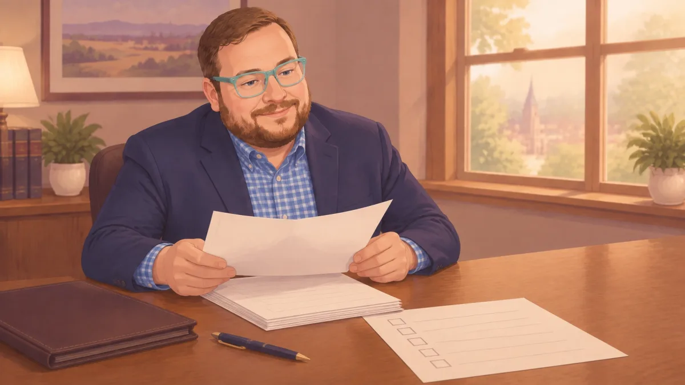

Do You Really Need a Lawyer for an Indiana Expungement? What the Forms Won't Tell You
If you are looking into an Indiana expungement, you may be asking whether you can file on your own. Sometimes, you can. A single older misdemeanor, no other record, and no unpaid court costs may be a fairly straightforward case.
But Indiana's law has details that free forms may not explain. The right waiting period depends on the type of case. Your whole criminal history may matter. And you generally get just one petition to expunge convictions in your lifetime.
I'm Chris Doran, a small town lawyer serving Jennings County. I listen to what you have to say and give you practical options. Here's what to know before you decide how to move forward. If you want the broader picture first, I've also written a general overview of how expungement works in Indiana.
Indiana expungement does not destroy your records
Indiana's expungement law is a sealing-and-restriction law. Records are not deleted or destroyed.
What happens depends on the type of conviction:
- Misdemeanors and some lower-level felonies (Categories 2 and 3). If the court grants the petition, records are permanently sealed from public access. Law enforcement may still access them for official duties. A prosecutor may ask the court to unseal records if they are relevant to a new prosecution.
- Other eligible felonies (Categories 4 and 5). Records remain public. They are marked "EXPUNGED," and the law limits how they may be used.
That distinction is easy to miss when a form simply says "expungement." The statute lays out five categories in total, and a prosecutor may agree in writing to a shorter waiting period for any of them; the exact offense and record determine which category applies. You can read the full breakdown in Indiana Code Chapter 35-38-9 and the Indiana Office of Court Services expungement digest. (Citations in this article are to the 2026 edition of the Indiana Code; the General Assembly amends this chapter nearly every session, so always confirm current text before relying on a specific subsection.)
For certain arrests, such as cases where all charges are dismissed or a person is acquitted of all charges, the law provides for automatic expungement under specific conditions. Arrest-only petitions have no filing fee (IC 35-38-9-1(e)), unlike conviction petitions, which require the standard civil filing fee (IC 35-38-9-8(d)), and arrest-only petitions are not subject to the one-petition lifetime limit.
That difference is really the shape of this whole article. An arrest-only petition is low-stakes: no fee, no lifetime limit, and the forms are built for it, so it's a reasonable one to handle yourself. A conviction petition is the opposite on every count: it costs money to file, though the court can reduce or waive that fee if you're indigent (IC 35-38-9-8(d)), it draws on the one chance you get in your lifetime, and getting a detail wrong can cost you that chance. That's the gap a lawyer is actually bridging.
Five details the forms may not make clear
1. You generally get one conviction petition in your lifetime. The lifetime limit applies to conviction expungements, not arrest-only petitions (IC 35-38-9-9(i)). You can include more than one conviction in a petition, but convictions from the same county must be included together.
If convictions are in different counties, you generally need to file in each county within the same 365-day period for those filings to count as one petition. Limited rules may allow refiling after a denial or adding an omitted conviction, but those are not automatic fixes.
This is often the deadline people do not see coming. Filing for one old conviction without checking for others could affect your options later.
2. The waiting period may start on a different date than you expect. For misdemeanors and lower-level felonies (Categories 2 and 3), the clock generally starts on the date of conviction, not when probation ends or court costs are paid. If a Level 6 felony is later reduced to a misdemeanor, the waiting period still starts from the felony conviction date. It does not start over when the charge is reduced.
Categories 4 and 5 work differently. The wait for Category 4 is the later of eight years from conviction or three years from completing your sentence; for Category 5 it's the later of ten years or five years from completion. If you served time, the sentence-completion date often controls, and it can push the earliest-filing date well past what a simple "years since conviction" count would suggest. Category 5 adds one more condition on top of the wait: the prosecutor's written consent isn't just a way to shorten the period there, it's required for eligibility in the first place.

3. Unpaid costs or a new conviction can matter. For a conviction petition, you generally need to show that:
- No criminal charges are pending.
- All fines, fees, court costs, and court-ordered restitution are paid.
- You have not been convicted of another crime during the applicable look-back period: generally five years for Category 2, eight years for Categories 3 and 4, and ten years for Category 5.
Even a small unpaid court cost may be important. Check your payment history before filing.
4. Serving the prosecutor and filing details matter. For conviction petitions, you must serve the prosecutor according to Indiana's court rules. The prosecutor has 30 days to respond. If the prosecutor does not respond in time, the prosecutor waives an objection. If there is no objection, the court may decide a Category 2 or 3 petition without a hearing. An objection can lead to a hearing.
The petition also asks for specific information, including names and aliases, birth date, addresses, case numbers, past convictions and related actions, Social Security number, and driver's license number. The expungement case file is generally public until the court grants the petition, so filing and privacy rules matter.
5. Eligibility depends on your whole history. The court may consider your entire criminal history, not just the conviction you want expunged. Previously expunged convictions are not counted in the same way. Certain convictions or records can also rule out relief under one or more categories.
Examples of exclusions include sex or violent offender status, some homicide, trafficking, and sex offenses, certain firearm convictions, and some official misconduct convictions. A perjury conviction is a complete bar to Category 3 expungement specifically (IC 35-38-9-3(b)(4)); it isn't automatically excluded from every category, but it rules out that path. If the perjury charge was itself reduced to a misdemeanor, it falls under Category 2 instead, which doesn't carry that exclusion. The details depend on the statute and your full record.
In Jennings County, many expungement cases are decided on paperwork rather than argument. That makes accurate records, proper service, and filing everything together especially important.
What an expungement can, and cannot, do
This is usually the part clients care about most: once your conviction is expunged under Categories 2 or 3, Indiana law says you are to be treated as if you had never been convicted of the offense, and in most situations, including job and housing applications, you can truthfully answer that you were not convicted of it. That same statute carves out one exception, though: if you are later arrested or convicted of a new, unrelated offense, the prior expunged conviction can still be considered at sentencing, counted toward a habitual-offender enhancement, or admitted as evidence (IC 35-38-9-10(e)).
A granted expungement can also restore civil rights, including the right to vote, hold public office, and serve as a juror. State law protects people from certain discrimination based on an expunged or sealed record. It gives this example of a question employers may ask: "Have you ever been arrested for or convicted of a crime that has not been expunged by a court?"
There are other limits as well. Expungement does not:
- Clear an existing or pending driver's license suspension.
- Restore firearm rights after a domestic-violence conviction. That requires a separate process.
- Remove a person from the sex offender registry or end registry duties.
- Change certain internal law enforcement or public defender records, diversion or deferral records, or some commercial driver records.
When free forms may be enough, and when to ask for help
A single misdemeanor that is well past the five-year mark, with no other record, no unpaid costs, and no pending charges may be a reasonable do-it-yourself case if you can follow the instructions and serve the prosecutor correctly.
It may be worth talking with an Indiana expungement attorney if you have multiple convictions, cases in different counties, any felony, an unclear waiting period, possible exclusions, or a Category 4 or 5 case where the court has discretion. That discretion is worth pausing on: for Categories 2 and 3, the court must grant your petition once the statutory conditions are met. For Categories 4 and 5, the court may grant it, meeting every requirement on paper doesn't guarantee the outcome. Extra care makes sense whenever the lifetime petition limit could apply.
Frequently Asked Questions
These answers are general information, not legal advice, and do not create an attorney-client relationship. Every case is different. Call us about your specific situation.
Does an expungement erase my record in Indiana? No. Indiana law does not destroy records. Categories 2 and 3 are sealed from public access. Categories 4 and 5 remain public but are marked "EXPUNGED."
How long do I have to wait to expunge a misdemeanor in Indiana? Generally, five years from the date of conviction. A written agreement from the prosecutor may allow an earlier filing in some cases.
Can I expunge more than one conviction in Indiana? Yes. You can include multiple convictions in one petition. You generally need to include all convictions from the same county together and file in different counties within the same 365-day period to meet the lifetime-petition rule.
Will an expungement restore my gun rights or my driver's license? Not by itself. Expungement does not clear a current or pending license suspension. It also does not restore firearm rights after a domestic-violence conviction; that requires a separate legal process.
Questions about a Jennings County expungement? Call (812) 979-0107 and leave a message.
Chris Doran Law LLC serves Jennings County, including North Vernon, Vernon, Butlerville, Scipio, Hayden, and Commiskey, as well as nearby Columbus, Seymour, and Versailles. Meetings are by appointment only; there are no walk-ins or unscheduled calls. Travel to surrounding areas is available, and any travel fees will be discussed up front. Learn more about criminal defense services or contact the office.